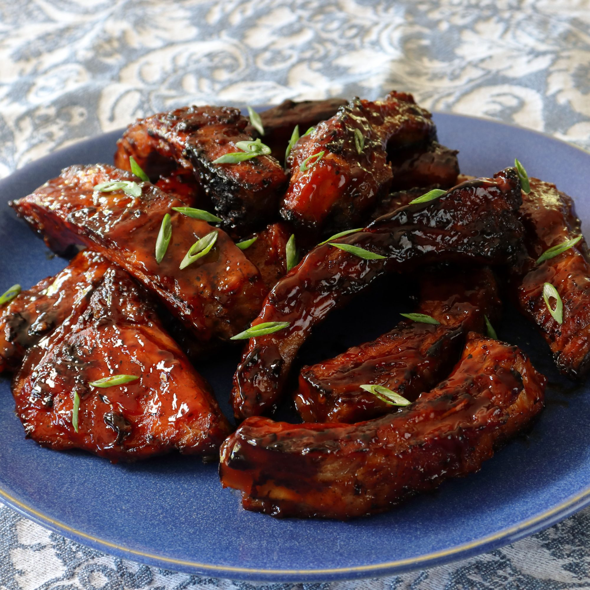

Sticky Ribs Recipe

Ingredients
Main
- 4 teaspoons kosher salt
- 4 teaspoons white sugar
- 1 teaspoon freshly ground black pepper
- 1 teaspoon paprika
- 1 teaspoon garlic powder
- 2 racks baby back pork ribs
Glaze
- 1/3 cup ketchup
- 1/4 cup brown sugar
- 2 tablespoons soy sauce
- 2 tablespoons rice vinegar
- 1 tablespoon vegetable oil
- 1 pinch cayenne pepper
Cooking Directions
- Preheat the oven to 250 degrees F (120 degrees C).
- Line a large sheet pan with heavy-duty aluminum foil. Place rack of ribs on the prepared pan, bone side down. Poke all over with a sharp knife. Make shallow slits across at an angle, and then repeat the opposite way; this allows the dry rub to penetrate. Coat on both sides with rub; flip back over, ensuring the bone side is down. Wrap tightly with foil.
- Transfer to the center of the preheated oven and bake for 2 hours. Remove from the oven and let cool to room temperature. Refrigerate until cold and firm, at least 2 hours, up to overnight.
- Preheat a charcoal grill until coals are very ashy and hot.
- Remove from the refrigerator, unwrap, and brush off excess fat. Slice between the bones to separate each rib.
- Combine ketchup, brown sugar, soy sauce, vinegar, oil, and cayenne with a spoon in a bowl for glaze.
- Place ribs on the preheated grill and cook for 2 minutes; flip and brush over glaze. Flip and repeat process until ribs are as caramelized as you prefer, about 10 minutes more.
- Remove to a plate and brush over one more application of glaze. Serve.
Back to main page